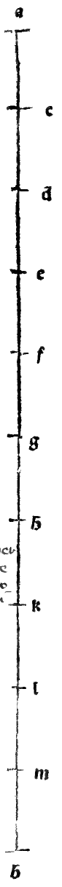

Part II: Treatise on Architecture¶
Tractato de l’Architectura — Prohemio & Chapters I–XX · Dedicated to the Stonemasons & Disciples of Borgo Sansepolcro (1509)
Printed at Venice in 1509 (Folios 0061–0082, f. 23r–33v). Opening any chapter provides synchronized switching across English, Italian, German, and Notes.
Outline of Chapters¶
I. Prohemio — Dedication to Borgo Sansepolcro¶
Prohemio: Dedicatory Epistle to the Stonemasons of Borgo Sansepolcro
Having been entreated by you many times that, beyond the practical rules of Arithmetic and Geometry which I have already given you, I should also bestow upon you some rule and norm whereby you might attain your desired goal in Architecture, I cannot refuse—even though I am presently overburdened for the common utility of present and future generations in seeing our mathematical works through the printing press (in procincto de loro impressione)—to satisfy your humane request, if not in full, at least in that part which I know to be most necessary for your craft.
II. Vitruvian Human Proportions (Cap. I–III)¶

Chapter I: Proportions of the Human Body and Head as the Model of Architecture
We must first consider, as Plato says in his Timaeus when treating of the nature of the universe, that when God fashioned man, He placed the head at the highest summit of the body in the likeness of the citadels and fortresses (rocche e fortezze) in cities, so that it might stand as the watchtower and guardian of the entire bodily edifice and all its lower members.
Chapter II: Profile to Nape, Proportions of Eye and Ear, and the Perspective Net
Having explained the vertical divisions of the facial profile \(mk\), we now set forth the horizontal divisions across the width of the head from the front profile \(mk\) to the nape (cotozzo) \(a\), the proportions of the eye, ear, neck, occiput, and crown, and the instrument called the net (la rete) used by painters.

Chapter III: Whole Human Body Proportions and the Perfect Numbers 6, 10, and 16
Having treated sufficiently of the proportions of the head, we now set forth the proportions of the entire human body to its head and other exterior members—measured always on the bare bone stripped of flesh (del puro osso netto dale carni), since some men are corpulent and others lean, whereas the skeleton is firm and invariable—so that after this canon you may proportion your columns and buildings.
III. Columns, Classical Orders & Architectural Solids (Cap. IV–XI)¶
Chapter IV: Round Columns, Bases, Capitals, Pedestals, and the Corinthian Capital
Wishing to give you concisely all that is needed for round columns (colonne rotonde, depicted in full on Plate 0213), I divide this treatment into two parts: first the column with its base and capital, and second its pedestal or stylobate (stilobata ouer pilastrello).
Chapter V: Length, Thickness, Entasis, and Attic Base of the Round Column
Continuing with the round column (Plate 0213), we now set forth the proportions of its shaft (fuso / tronco) and of its base (basa, called spira by Vitruvius).
Chapter VI: The Stylobate, Roman Alphabet, and the Three Sets of Polyhedra Models
The stylobate (stilobata, which we call the pilastrello or basamento of the column, marked \(cdef\) in Plate 0213) is the rectangular pedestal that supports the column and its base.
Chapter VII: Differences of Ionic, Doric, and Corinthian Columns in Vitruvius
You must further note that while the three species of columns—Ionic, Doric, and Corinthian—may share similar bases and stylobates, they differ fundamentally in the slenderness of their shafts and the form of their capitals:
Chapter VIII: Ancient and Modern Columns in Italy and Critique of Leon Battista Alberti
I cannot fathom, my dearest disciples, why our fellow countryman Leon Battista Alberti of Florence (Leonbatista de li Alberti Fiorentino)—with whom I lived for many, many months in nurturing Rome during the pontificate of Pope Paul II Barbo of Venice, in his own house and at his own table and expense, always treated most generously by him (con lo quale più e più mesi nell’alma Roma al tempo del pontifice Paulo Barbo da Vinegia in proprio domicilio con lui a sue spese sempre ben tractato)—a man truly of the greatest perspicacity and learning in humanity and rhetoric, as appears from the lofty style of his work on Architecture (De re aedificatoria), failed in that work to observe the moral precept that bids every man contend for the honor of his homeland (pro patria)!
Chapter IX: Lateral Columns in Architecture and Quadrature of the Circle
Having spoken sufficiently for your needs concerning round columns, it seems fitting to say a brief word also concerning lateral (polygonal or prismatic) columns (colonne laterate, such as square, hexagonal, and octagonal piers and pilasters), so that their fabrication may not seem useless among the others—seeing that besides bearing weight in buildings, they lend the greatest beauty and variety to the sight!
Chapter X: Round and Lateral Pyramids and Praise of Leonardo da Vinci’s Drawings
Pyramids, both round (cones) and lateral (polygonal pyramids and obelisks/spires), will likewise be easy for you to fashion and proportion from their corresponding columns, seeing that—as our Euclid proves demonstratively ([XII.7], [XII.10]) and as we explained in Chapters LXIV–LXVIII—every pyramid, whether in weight (*al peso*) or in solid measure (*ala mesura*), is always in every way exactly one-third (:math:`frac{1}{3}`) of its cylinder or column having the same base and height!
Chapter XI: Origin of Letters, Egyptian Hieroglyphs, and Tribute to Galeotto della Rovere
As I recall telling you above (Chapter VI), I placed the Ancient Roman Alphabet in this volume (Appendix I) to demonstrate to everyone that with no other instruments than the straight line and the curved line (libella e circino) one can construct to perfection not only the Latin alphabet, but the letters of every nation—whether Hebrew, Greek, Chaldean, or Latin—as I have many times asserted and proved in practice, even though I do not know all their languages!
IV. Entablature, Porta Speciosa & Structural Harmony (Cap. XII–XX)¶
Chapter XII: Intercolumniations of Round Columns According to Vitruvius Book V
Having shown how round columns are carved and proportioned in themselves, we now explain for those who must erect them in buildings the ancient and modern rules for their spacing or intercolumniation (intercolumnium, which we also call tetrante).
Chapter XIII: Intervals Between Adjacent Triglyphs
What we have just said concerning the spacing of columns applies equally to the spacing of the triglyphs (tigrafi), which are placed near the summit of buildings upon the frieze above the epistyle (architrave):
Chapter XIV: The Epistyle (Architrave) and Why Excessive Spans Crack Architraves
Once the columns have been erected plumb (a livello) upon their stylobates, with their bases and capitals firmly bedded with iron dowels and molten lead (con loro ferri ben saldi e ben piombati), there is laid across their capitals the epistyle (epistilio in Vitruvius, called the architrave by our modern masons) to bind and chain all the columns together in a single straight line (per fermezza e incatenatura de tutte le colonne).
Chapter XV: The Zophorus (Frieze) Above the Epistyle
Directly upon the top taenia (\(h\)) of the epistyle rests the zophorus (zophoro, marked \(V\) in Plate 0215), which our modern craftsmen call the frieze (fregio).
Chapter XVI: Composition and Mouldings of the Cornice (Cornicione)
Above the frieze (zophoro, \(V\)) is assembled the crowning upper block called the cornice (cornice by the Ancients, cornicione by the Moderns, depicted with its letters \(k, l, m, o\) in Plate 0215).
Chapter XVII: The Temple Portal Called Porta Speciosa (Plate 0185)
Above the epistyle and cornice (or in the Doric order along the frieze zone and attic parapet) are set the triglyphs (tigrafi)—small rectangular piers carved with three vertical ribs (*tre coste*) and two channels (*doi canellati*) like little grooved pilasters, spaced two or two and a half widths apart directly over the axes of the columns below. Between them stand solid stone slabs (lastroni / metope) like parapets, upon which are carved in relief ox-skulls (*bucrania / teste de capi de buoi*), horse-heads, garlands (*ghirlande*), sacrificial paterae/basins (*bacili*), and rosettes (*rosoni*).
Chapter XVIII: Polyhedra in Architecture and Phidias in the Temple of Ceres
Having discoursed sufficiently for your needs, beyond all that we have said above, I remind you that your architectural and sculptural works will win the highest praise if, wherever it seems fitting to you, you place as a base, capital, finial, or ornament some of those mathematical bodies of ours (qualcuno de quelli nostri corpi mathematici, Plates I–LIX), which I have so often shown you in physical three-dimensional models!
Chapter XIX: Cramped Sites, Continuous Proportion, and Piero della Francesca
An architect must be exceedingly prudent in advising patrons on buildings and in laying out their models (in la puntatione de’ lor modelli), lest he lead his patron into useless and ruinous expense.
Chapter XX: Superimposed Columns, the 1498 Sforza Disputation, and Venetian Colophon
Because up to this point we have spoken only of columns standing on the ground floor, it remains to explain how columns placed in a second story above other columns (colonne situate sopra altre colonne, as in two-story cloisters, loggias, and basilicas—such as the noble cloister of our convent of Santa Croce in Florence and many other buildings in Italy) must be proportioned both for structural stability and for visual grace.